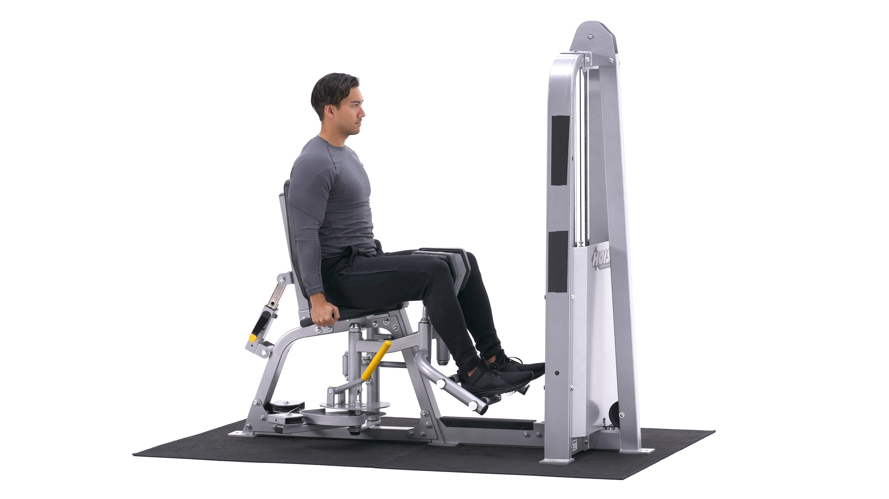
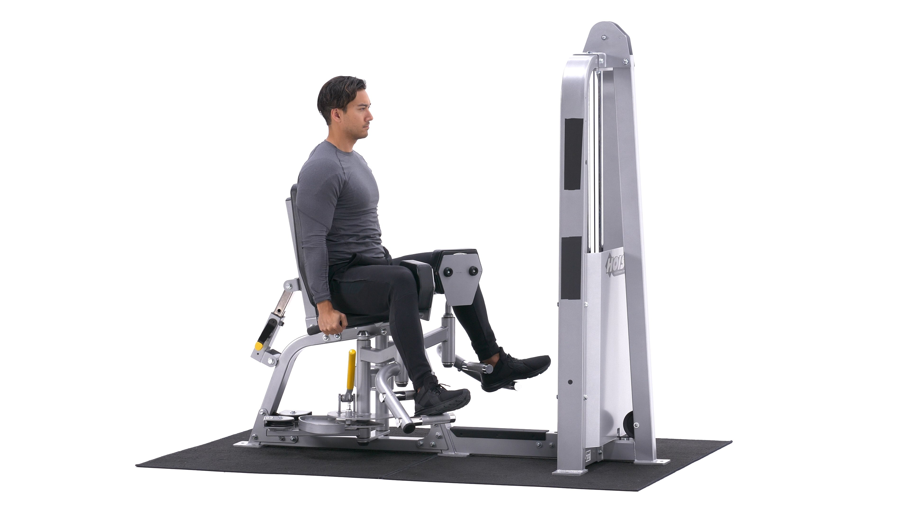

The thigh adductor machine is a lower-body exercise that targets the muscles of the inner thighs. It is usually performed for moderate to high reps, such as 8-12 reps per set or more, as part of lower-body training.
1. To begin, sit down on the adductor machine and select a weight you are comfortable with. When your legs are positioned properly on the leg pads of the machine, grip the handles on each side. Your entire upper body (from the waist up) should be stationary. This is the starting position.
2. Slowly press against the machine with your legs to move them towards each other while exhaling.
3. Feel the contraction for a second and begin to move your legs back to the starting position while breathing in. Note: Remember to keep your upper body stationary and avoid fast jerking motions in order to prevent any injuries from occurring.
4. Repeat for the recommended amount of repetitions.
1. Builds strength in the inner thigh and adductor muscles.
2. The machine allows for controlled reps and strict form.
3. Stronger adductors can make for a stronger squat.
4. Great high-rep training for the hips.
This is the Hip Adduction in the down position.
This is the Shoulder Press in the up position.
